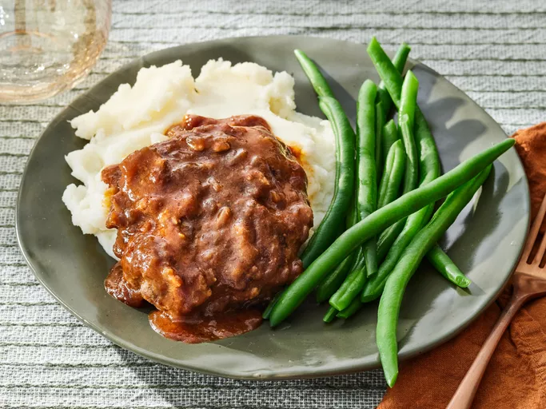

Salisbury Steak
Salisbury steak with a savory onion sauce. This yummy recipe has been in my family for years. It's easy to cook but tastes like it took hours to make! I usually make enough extra sauce to pour over mashed potatoes.
Ingredients
- Beef
- Eggs
- Flour
- Bread Crumbs
- Canned Soup
- Seasonings & Sauces
Steps
- Make and shape the patties.
- Brown the patties on both sides, then drain the excess fat.
- Make and season the gravy.
- Pour the gravy over the patties and continue cooking until the meat is cooked through.